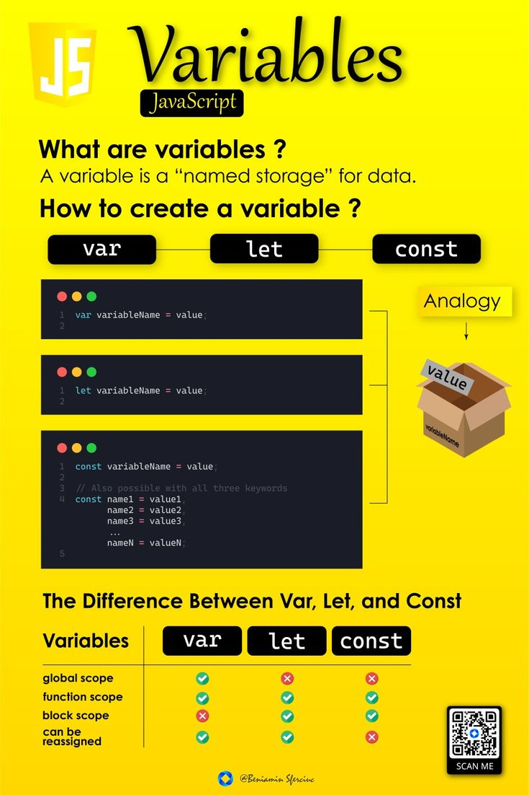

JAVASCRIPT
What is JavaScript?
JavaScript is a high-level, interpreted programming language widely used for web development. It enables developers to create dynamic, interactive web pages and applications.It can operate both on the client-side (in web browsers) and the server-side (using environments like Node.js).Together with HTML (structure) and CSS (style), JavaScript forms the foundation of modern web development.
Core Features:
JavaScript is known for its dynamic typing, allowing variables to hold any type of data without prior declaration. Its event-driven nature enables it to respond to user actions such as clicks or key presses. With support for asynchronous programming using callbacks, promises, and async/await, JavaScript handles tasks like API calls efficiently. Unlike traditional class-based languages, it uses prototype-based inheritance for object orientation. Additionally, JavaScript is cross-platform, capable of running in any browser or server environment with JavaScript support.
Basic JavaScript Syntax:
The syntax of JavaScript is beginner-friendly, using familiar constructs like variables, functions, conditionals, and loops.
JavaScript in Web Development:
JavaScript plays a crucial role in enhancing the user experience on websites by enabling dynamic content updates, interactivity, and responsiveness. It manipulates the Document Object Model (DOM) to change elements, styles, and attributes on the fly. Event handling allows developers to capture and respond to user actions like clicks or form submissions. JavaScript is also widely used for client-side form validation, ensuring data integrity before submission. These features make it indispensable for building interactive and engaging web applications.
Use Cases:
JavaScript is incredibly versatile, finding applications in web development, mobile app development, and game development. It powers single-page applications (SPAs) and real-time features like chat applications.Frameworks like React Native enable mobile app development, while libraries like Phaser.js make JavaScript a tool for game development. Additionally, it is used for server-side development with Node.js, creating browser extensions, and automating tasks through tools like Puppeteer.
Tools and Debugging:
JavaScript developers rely on tools like browser developer tools for debugging, analyzing performance, and inspecting elements. Console logging with console.log() is a simple yet effective debugging method. Linting tools like ESLint help enforce coding standards and identify potential issues. Version managers like NVM simplify managing multiple Node.js versions, while build tools like Webpack bundle JavaScript files for production.
Advantages:
JavaScript offers several benefits, including its versatility, allowing it to run in browsers, servers, and even IoT devices. It adds interactivity to websites, making them more engaging and responsive. Its extensive ecosystem of libraries and frameworks accelerates development and provides solutions for common challenges. Furthermore, modern JavaScript engines like Google’s V8 ensure fast and efficient execution, making it suitable for high-performance applications.
Challenges:
Despite its strengths, JavaScript has its challenges.Browser inconsistencies can lead to unexpected behavior if features are not supported universally. Security risks such as cross-site scripting (XSS) require developers to follow best practices. Additionally, understanding advanced concepts like asynchronous programming and closures can be daunting for beginners. Addressing these challenges requires careful coding and ongoing learning.